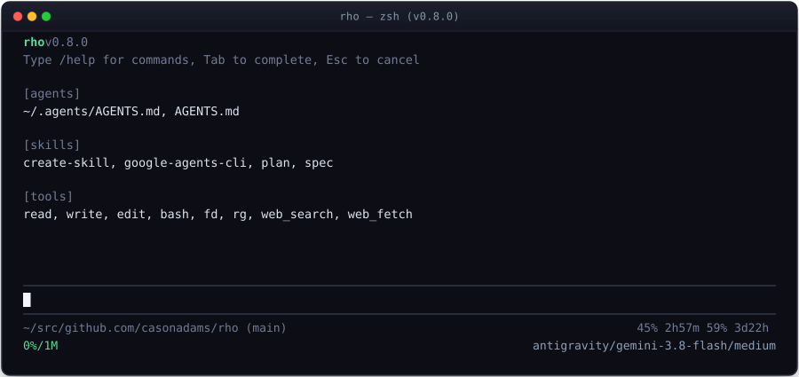
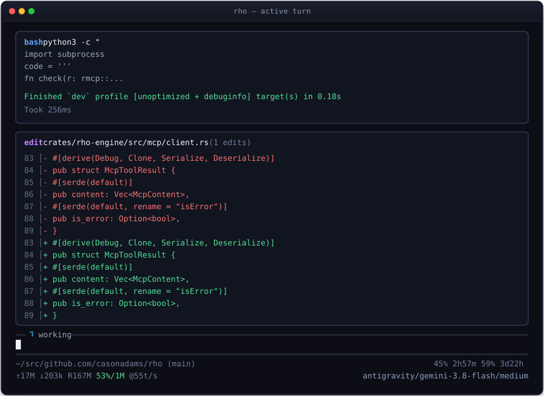
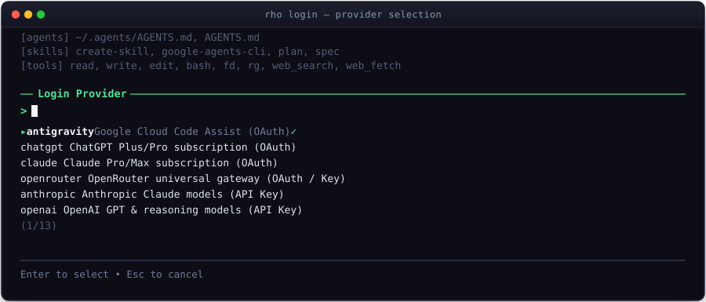
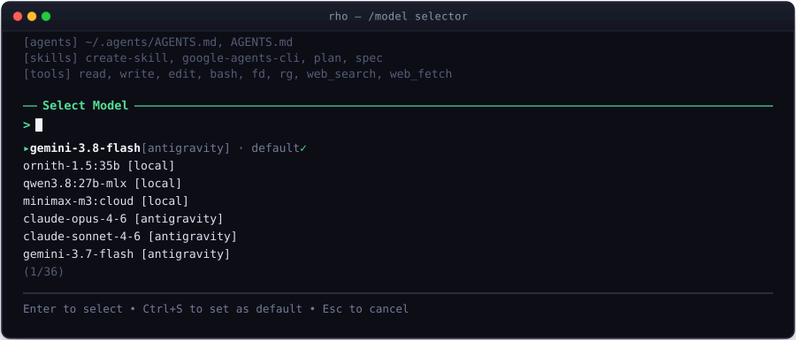

Getting Started with rho
rho is a fast, clean, local, private, and secure coding agent CLI built in Rust. It delivers native performance, strict in-process safety boundaries, session persistence, standard MCP tool servers, and lightweight lifecycle hooks.

The pirho Connection: For those who play with fire
In Greek, combining π (pi) and ρ (rho) spells πυρ (pyr) — fire.
rho was built with deep appreciation for the minimalist terminal ergonomics of pi.dev,
forging that same clean spirit into bare-metal Rust. Together, π + ρ makes pirho: designed for developers who love playing with fire, moving at blazing native speed, and keeping zero runtime bloat between them and their code.
- Aligned ergonomics: Identical thinking levels, slash commands (
/thinking,/skill:<name>,/new), and positional prompts. - Native Rust speed: Compiled binary with instant startup, zero node/python runtime prerequisites, and in-process tools.
- Safe fire handling: Fail-closed lifecycle hooks, process group isolation, and direct provider connections.
Installation
cargo install rhobrew install casonadams/tap/rhogh release download -R casonadams/rhoCLI Commands & Options
rho provides a focused set of subcommands and flags for agent execution, MCP tool management, and configuration:
# Start interactive multiline REPL
rho
# Execute a one-shot prompt
rho -p "Find and fix memory leaks in parser"
# Continue the last session in the current directory
rho -c
# Interactively browse and select from previous sessions to resume
rho -r
# Resume a specific session by ID (including budget checkpoint).
# On exit, rho prints the exact command for the session you just left.
# In an interactive terminal rho also records the session ID in
# ~/.config/rho/terminal-sessions/ so a multiplexer can resume each pane.
rho --resume <SESSION_ID>
# Export session to HTML or Markdown
rho --export session.html
# Authenticate an AI provider (OAuth subscription or API key verification)
rho login claude
rho login chatgpt
rho logout anthropic
# List live provider models and context windows
rho models
# Inspect or edit configuration
rho config
rho config model anthropic/claude-3-7-sonnet
# Model Context Protocol (MCP)
rho mcp list
rho mcp test filesystem
rho mcp add db "https://mcp.db.example.com/mcp"
rho mcp remove db
rho mcp login linear
rho mcp approve
# Tool call/error rates and file edits made through bash, from local sessions
rho stats
rho stats --last 5
# Self-update to latest release
rho update 
14 Built-in Native Tools
rho includes 15 fast, native tools designed specifically for coding agents:
read: Safe file inspection with line numbers, chunk offsets, limit bounds, and image sniffing.symbolreads one function, type, or method, located by the file's language server.write: Creates or overwrites files with automatic missing directory creation.edit: Exact text replacements: a uniqueoldText, every match withreplaceAll, or a whole block fromstartTextthroughendText. The result lists each changed region, numbered likeread.undo: Reverts the lastedit,write, orlsprename, code action, or format to a file (up to 20 steps per file; a filewritecreated is deleted), and refuses when the file changed after that tool wrote it.lsp: Asks the file's language server for diagnostics, definitions, references, hover, implementations, symbols, quick fixes (code_actions), formatting, or a workspace-wide rename. Servers come from a built-in table (rust-analyzer, gopls, typescript-language-server, pyright, clangd, and more) plus~/.agents/lsp.json,.lsp.json, and.agents/lsp.json, and start on first use.editandwriteresults end with the server's errors and warnings for the new content; diagnostics that arrive later are delivered as a notice. Subagents have it too, run against their own worktree (servers start there on first use and stop when the subagent's round ends), and withoutrename,format, or applying code actions unless they can write. To add a language rho does not ship, put an entry in~/.agents/lsp.json; for Dart:{"dart": {"command": "dart", "args": ["language-server"], "extensions": ["dart"], "rootMarkers": ["pubspec.yaml"]}}. Runlsp statusto confirm it is installed (see Adding a language server).bash: Process group cleanup, timeout watchdog, and binary output sanitization. Commands run with color enabled so the terminal shows it, while the model receives the same output without escape codes. Long output is clipped to its first and last lines (more of the end when the command fails) with a path to the full log; when the clipped output has failing tests (cargo test, nextest, pytest, go test, Jest, Vitest), a short section lists each failing test with its key failure lines. A command that moves to the background belongs to its session: turns wait for and hear about only their own session's jobs, switching sessions stops the old session's background work, and interrupting a turn stops the session's running jobs.fd: Fast gitignore-aware workspace file discovery with smart-case regex matching. Entries are grouped under their parent directory (dir/header, indented names; directories end with/) after a total count.rg: Content search, gitignore-aware, skipping binaries and bounding output lines. Matches are grouped by file (path line, thenline:textrows) after anN matches in M filestotal;output_modefilesorcountlists only matching files or per-file counts.context(0-10) addsline-textrows around each match, andmultilinelets a pattern span lines.fdandrgfill a 20KB page and end with the exactoffsetfor the next page, so every result stays reachable;limitcaps results per page.- When
read,edit,fd, orrggets a missing path, the error suggests up to three close workspace paths (Did you mean: ...?). - When every tool call in one model response is read-only (
read,fd,rg,web_search,web_fetch, or read-only subagents), the calls run in parallel. subagent: Spawns isolated subagents with specialized roles (scout,critic,planner,general) or custom agents to perform focused work without parent context bloat. Apersona(markdown files in~/.agents/personas/or the project's.agents/personas/) adds behavior instructions to any role or agent without changing its tools. The caller passes a model role (default,smol, orslow; default: the persona, role, or agent's pin in[subagents.models], elsesmol) andturns(default 100). Subagent tool calls go through the same permission rules and lifecycle hooks as the parent, stop on cancellation, stream per-turn progress, and return a summary with turn, tool-call, and token counts and the files they changed. Pass a camelCasename(e.g.performanceAudit) to label a subagent's progress, list entry, task ids, and result. Subagents talk to the main agent using the A2A task model: each result ends with a task id and state, the main agent can send review feedback or answer a subagent'sask_parentquestion by callingsubagentagain with thattask_id, and the subagent continues with its full history. A subagent finishes by callingcomplete_taskwith its report, which becomes the task's result; text outside that call is not passed on, and the call is refused while a message to it is waiting or its own background work still runs. Subagents run on the main agent's turn loop with their own tools and turn limit, so they get the same retries, streaming and thinking in the agent view, and context compaction when a request overflows the model's window. A subagent that hits its turn limit summarizes its work and waits (input-required) instead of losing it. Each round is saved in the session file, so tasks can be continued after--resume. Results end with evidence the main agent can check: files changed (with changes made during itsbashcommands credited to them, in git work trees or a bounded walk elsewhere), tool outcomes with any errors or permission denials, and a warning to the subagent when files it read have changed since.inspect: trueshows a task's full record or lists every task without running anything. In a git repository each subagent works in its own worktree; its changes reach your working tree only when the main agent merges them with theworktreetool, and review feedback continues in the same worktree. Each subagent is grounded with its tool guidelines,AGENTS.md, and the environment.inherit_context: trueshares the recent text-only parent conversation. Several subagent calls in one turn run concurrently: all of them in a git repository, where each has its own worktree, otherwise those whose tools are all read-only. A subagent starts in the background (setsubagents.foreground_secondsto a nonzero value to run it inline for that long first): the call returns its task id, the main agent keeps working or callswait, and the result arrives as a follow-up message before the turn ends. The card tells you to press←on an empty prompt to watch it. Callingsubagentwith a running task'stask_idand apromptqueues a message the subagent reads before its next model call; a different role, agent, or persona, or anymodelorturns, is refused. At most 8 subagents run at once, background results are clipped at 20 KB and marked as untrusted output, and each result's footer names the model that ran. Press Left on an empty prompt and pick one to show it in the main terminal in place of the main agent, the way the main agent is shown; typing messages it. When an agent you are not looking at needs a permission answer, the view switches to it (or, withsubagents.approval_focus = "indicate", the footer names it).worktree: Reviews, merges (three-way, leaving conflict markers to fix), or discards the worktrees where subagents and workflows did their work.diffopens with, andmergeends with, a static review of the added code (smells, clean-code and duplication findings with file:line, errors first); it never blocks a merge and does not run tests or linters.web_search: Live web searching with domain filters and structured summaries.web_fetch: Clean extraction of markdown, plain text, HTML, CSV, or feeds from URLs.memory: Keeps short notes across sessions (view,add,remove) for durable, non-obvious facts. Notes are markdown bullets in~/.agents/memory/<project key>.md(scopeproject, the default) and~/.agents/memory/global.md(scopeglobal), at most 50 notes or 8 KB per scope, one line of up to 300 characters each. Both files are read once at session start into a<memory>block of the system prompt, so changes take effect in the next session. Memory calls need no permission prompt; subagents do not get the tool;--no-context-filesskips loading the notes.todo: An ordered task list (pending,in_progress,completed) for multi-step work. Each call replaces the whole list and allows at most one item in progress; a call withouttodosshows the current list. The list is read back from the conversation, so it survives--resume, and compaction copies an unfinished list into its summary. Each subagent keeps its own list. Its card header shows progress and the active item, such astodo 1/3 done · Add tests.wait: Blocks until background work reports back, instead of polling withsleep. It returns as soon as a backgroundbashjob or subagent task finishes, with every result that has arrived (which is then not delivered again as a follow-up message), when a new message arrives, or after 10 minutes with aStill running:list. With nothing running it returns at once. Calling it again waits for the work still running. The footer shows it while it waits, and it leaves no card in the transcript.Escends the wait without stopping the jobs.bashrefuses a baresleep,pgrep,ps, ortail -fpoll run in the foreground while a job or subagent task is running and points towait.
Workflows
A workflow is an XML file in .agents/workflows/ (project) or ~/.agents/workflows/ (user). rho runs it itself, so fan-out, verification, and stop conditions are enforced rather than requested. Start one with /workflow <name> [inputs]; /workflow alone lists them. Workflows are never offered to the model as a tool, and rho ships one built in, /workflow audit [categories] [paths] [passes] [max_tasks] [scope] [verify]: a read-only audit across ten quality categories of the whole repository (scope repo), a branch (branch:main) or recent commits (commits:5, plus uncommitted changes) that saves a report and SARIF findings under .rho/audit/; verify is single or panel (two skeptics must both keep a finding). A workflow of the same name in .agents/workflows/ replaces it. Agent results are saved as a run goes, so /workflow resume <run id> continues a failed or cancelled run without repeating finished agents. In an <each>, every step in the body runs per item with no barrier between items, which makes a hunter-then-checker pipeline; result="{{ref}}" sets what each item yields. Steps inside an <each> are visible only to their own item, and <choose> yields the name of the case that ran, not its steps' values. Attribute values are XML (&, "), and a workflow's run log in .rho/workflows/ records every step. Long or multi-line text outputs print as paragraphs, not inside the JSON. A text output named summary is also printed as its own notice after the run, so the workflow chooses what the user reads. This repository's .agents/workflows/refine/ is a complete example.
- Steps:
<agent use="..." model="smol" turns="40">prompt</agent>runs one agent (the prompt is raw text, so code needs no escaping),<run cmd="make all"/>runs one command without a shell,<write path=".rho/out.md" value="..."/>writes a file under the project's.rho/(it survives the run's worktree), and<call workflow="..."/>runs another workflow. - Blocks:
<sequence>,<parallel>,<each items="..." as="x">,<loop max="6" while="..." until="..." stop-if-unchanged="...">, and<choose>; any element takeswhen/unless. There are no scripts or comparisons: steps decide, the workflow branches on their values. - References:
{{name}}reads inputs, step ids ({{verify.ok}},{{validate.actionable}}), and{{id.history}}. Names are checked before anything runs; a step that has not run yet reads as empty, which lets a loop feed one pass into the next. Filters transform a value:{{findings | compact | count_by:priority}}(compact,count,pluck:field,count_by:field,json). - Agents and models: agent files define only tools and instructions; the
<agent>block picks a model role (default,smol,slow), a turn limit (default 100), and optionally apersonawhose instructions are added to the agent's. Bothuseandmodelmay be{{references}}, resolved when the step runs, so one<each>can send each item to a different agent. Withoutput="json"the agent passes its JSON object as thedataargument ofcomplete_task, so prompts carry no output-format block;resume="1"gives an agent that stopped early a follow-up round in the same task.{{run.id}}names the run, and{{a | default:b}}falls back tobwhenais empty. Every agent is grounded with its tool guidelines,AGENTS.md, the environment, and which workflow step it is running. - Trust and visibility: workflows are trusted — commands and agent tool calls skip permission rules, prompts, the guard model, and hooks. Every step is logged to
.rho/workflows/, Escape cancels the run, and Left opens a live view of every agent. - Worktrees: every run works in its own git worktree (a snapshot of your working tree, uncommitted files included), and every agent in it gets its own worktree that is merged into the run's when it finishes. Parallel agents that change the same lines stop the run with conflict markers for the main agent to resolve. Your working tree is never touched: the run's worktree is merged or discarded by the main agent with the
worktreetool. Ignored directories such astarget/andnode_modules/are shared into each worktree so builds stay warm. Checkouts live in your private temp directory and each round is committed to the worktree's branch (details in.git/rho/worktrees), so nothing is lost if the OS clears temp files. The session that created a worktree owns it and is reminded to merge or discard it before finishing a turn; aborted rounds are cleaned up in the background, and unmerged worktrees are deleted 24 hours after they were created. - Hand-off: an agent that runs out of turns fails its step instead of passing on a partial answer, and its unmerged worktree is named in the report. Every agent run is saved in the session as an A2A task, the report lists their task ids, the files each agent changed, and the run's worktree, and the report is added in front of your next prompt, so the main agent can review and merge the work and continue any agent with the
subagenttool'stask_id(under normal permission rules).
Providers, Authentication & Rolling Quotas
rho supports both API keys and subscription OAuth. Run rho login <provider> to authenticate, or rho login to pick from the same provider list as /login (custom providers included, signed-in ones marked):
- Subscription OAuth:
chatgpt,antigravity,claude,openrouter. - API Key Providers:
anthropic,openai,deepseek,gemini,groq,xai,mistral,cohere,ollama-cloud. - Local Models:
local(runs Ollama locally viaOLLAMA_HOST, defaulthttp://127.0.0.1:11434). - Live Model Lists: rho ships no model list and no default model. Each session it fetches every reachable provider's models and context windows straight from the provider's API, in the background, and keeps them only in memory, so new models appear without updating rho. The model selector fills in as lists arrive and names any provider still loading or that failed. The selector and
/modelcompletions insert the listing's fullprovider/modelspec, and a bare id keeps your current provider when its live list carries that model, so a model id that another provider's name also matches stays where it is served: Ollama Cloud'sdeepseek-v4.1-flashis not routed todeepseek, nor local Ollama'sgpt-oss:20btoopenai. Until you pick one with/model, no model is selected. - Live Rolling Quotas: Interactive footer displays 5-hour and weekly quota used, with time until reset, for Antigravity, ChatGPT, and Claude (e.g.
5% 4h23m 11% 3d21h) and monthly quota for Ollama Cloud. - Multiple Accounts: Run
rho login claudeagain with another account to keep both. The first login staysclaude; the new one is saved asclaude:<email>. Pick its models asclaude:me@work.com/<model>. The model selector lists models per account, the login selector shows each account's email, the footer names the account in use, and quota is tracked per account.rho logout claude:me@work.comremoves one.

Configure defaults globally in ~/.config/rho/config.toml or per-project in .rho/config.toml:
# Role-based model configuration and thinking level
thinking_level = "high"
# Claude prompt-cache lifetime: auto (1 hour on claude logins, 5 minutes on API keys and subagents), short or long
cache_retention = "auto"
[models]
default = "anthropic/claude-3-7-sonnet"
guard = "local/qwen2.5-coder:7b"
# Execution limits & context window
max_turns = 1000
context_window_messages = 24
compaction_max_bytes = 8192
# Custom OpenAI-compatible endpoints
[providers.my-local-endpoint]
base_url = "http://127.0.0.1:8000/v1"
key_env = "LOCAL_API_KEY"
# UI block framing, output toggles, and border colors (persisted automatically via /settings)
[ui]
block_style = "border" # "border" (outline, default) or "solid" (fill)
agent_block_output = false # Box assistant responses in bordered frames
hide_thinking = false # Hide thinking transcript blocks by default
tools_expanded = false # Expand tool output cards by default
cursor = "hardware" # "hardware" (default, native cursor) or "software" (block)
auto_title = false # Background session title summary via models.smol (disable with --no-title / RHO_NO_TITLE=1)
terminal_title = false # Publish session title to terminal/tmux titlebar via OSC 0
terminal_title_state = false # Prefix terminal titlebar with idle/working/attention state
user_border = "blue" # User prompt blocks
agent_border = "gray" # Agent / sub-agent blocks
tool_border = "gray" # Tool / command cards
bash_success_border = "gray" # Successful bash commands
bash_error_border = "red" # Failed bash commands
# Optional prompt chrome, segmented/powerline status bar, and per-turn telemetry (all opt-in)
[ui.prompt]
prefix = "❯ " # Custom prompt glyph (default: " ")
show_version = true # Show version label in top divider
divider_style = "thinking" # "thinking" | "dim" | "none"
[ui.status_bar]
preset = "default" # "default" (2-line) | "minimal" | "compact" | "full" | "nerd" | "ascii" | "custom"
separator = "powerline-thin" # "powerline" | "powerline-thin" | "slash" | "pipe" | "dot" | "block" | "none" | "ascii"
icons = "nerd" # "nerd" | "unicode" | "ascii"
transparent = false # Drop background fill and powerline end caps
compact_thinking_level = true # Compact thinking glyph next to model name
context_line = "off" # "off" | "percentage" | "annotated" | "embedded"
left = ["model", "path", "git"]
right = ["token_total", "cost", "context_pct", "quota"]
[ui.display]
show_token_usage = false # Per-turn timestamp, tokens, TTFT, and right-aligned tok/s
show_turn_time = false # Include prompt-to-yield Δ duration in stats row
cache_miss_marker = false # Show divider when a warm prompt cache invalidates
# Web tools and search provider configuration (persisted automatically via /settings -> Tools & Permissions)
[tools.web.search]
enabled = true # Enable or disable built-in web_search
default = "brave" # "brave", "duckduckgo", or "yahoo"
fallback = ["duckduckgo", "yahoo"] # Fallback engines attempted only on failure/empty
[tools.web.fetch]
enabled = true # Enable or disable built-in web_fetch
[mcp]
enabled = true # Enable or disable MCP subsystem
[permission]
enabled = true # Enable or disable mutation guardrailsA model spec without a <provider>/ prefix uses the --provider flag when given, then the provider implied by the model name (claude-* is anthropic, gpt-* is openai), then the current provider (local at startup). During a session, a bare id the current provider's live list carries stays on that provider instead, for /model, set_model, and subagent model specs alike. Everything after the first / is the provider's model id, so OpenRouter ids keep their vendor segment: openrouter/anthropic/claude-3.7-sonnet.
Safety Guardrails & Modal Controls
rho features an in-process safety and permission gatekeeper that evaluates tool executions and shell commands before they run. Non-mutating inspections run automatically, while potentially hazardous operations are presented in an interactive confirmation modal:
- [y] Allow: Authorize this specific operation for a single run.
- [e] Edit: Inspect and modify command arguments interactively in a multiline editor before execution.
- [a] Always: Persist an allow rule (with wildcard pattern support) to
.rho/permission.toml(project) or~/.config/rho/permission.toml(global). - [n] Deny: Block execution and submit custom feedback to the agent so it can self-correct its plan.
Automated Guard Model Classification
To eliminate confirmation fatigue while maintaining strict safety, rho can delegate unclassified shell command evaluation to a dedicated, low-latency Guard Model.
- Frictionless Safe Execution: Benign developer tasks—running builds, tests, typecheckers, linters, local git inspections, and read-only diagnostics—are classified as safe (
{"safe": true}) and execute immediately without manual prompts. - Targeted Risk Interception: Hazardous operations—remote git pushes, remote branch deletions, cluster/cloud infrastructure mutations, privilege escalation, credential access, or mass deletions—are flagged (
{"safe": false}) and pause for confirmation with the model's security rationale. - Fail-Safe Closed Architecture: If the guard model times out (10s), is offline, encounters an error, or returns unparseable text,
rhofails closed and falls back to manual human confirmation (or denial in headless mode). Commands never slip through silently on error. If the guard model cannot be built at all,rhoshows a notice naming it and asks for approval on every unclassified command.
Recommended Local Model: qwen2.5-coder:7b
For fast, offline command inspection without cloud API costs or latency, ollama/qwen2.5-coder:7b is strongly recommended for the guard role:
- Domain Comprehension: Pretrained extensively on code, shell scripts, CLI flags, and DevOps tools (
git,kubectl,terraform,docker, cloud CLIs, database clients), accurately discriminating benign dev tasks from destructive commands. - Low Latency & Small Footprint: At ~4.7 GB quantized (Q4_K_M), it fits easily into Apple Silicon unified memory or consumer GPUs, providing sub-second classification without perceptible CLI pauses.
- Reliable Structured JSON: Runs deterministically at
temperature: 0.0with non-thinking execution (thinking_level: off), consistently producing clean JSON schemas. - Air-Gapped Privacy: Shell commands, repository paths, and sensitive CLI arguments remain 100% on-device and are never transmitted to cloud endpoints.
- Offline Resilience: Functions seamlessly during network disruptions, air-gapped environments, or offline travel.
# 1. Pull the model locally with Ollama
ollama pull qwen2.5-coder:7b
# 2. Configure guard model role in rho
rho config models.guard ollama/qwen2.5-coder:7b
# Or disable guard model evaluation (reverts to baseline prompt)
rho config models.guard noneDeclarative Rules (permission.toml)
Rules can be explicitly authored in .rho/permission.toml (project) or ~/.config/rho/permission.toml (global). Explicit rules take priority over the guard model:
[permission.bash]
"cargo test *" = "allow"
"npm run build" = "allow"
"git push --force*" = { action = "deny", reason = "Force-pushing is strictly prohibited" }
"rm -rf *" = { action = "deny", reason = "Destructive deletion blocked by project policy" }
[permission.path]
"*.env*" = { action = "deny", reason = "Do not read secret environment files" }The inline table form accepts any action: { action = "ask", reason = "..." } prompts and { action = "allow", reason = "..." } allows. The reason is only reported on deny, and an unknown action is a parse error.
Use rho --no-permission to bypass permission modals for headless non-interactive CI environments.
Privacy & Zero Telemetry
rho collects nothing. There is zero telemetry, zero background tracking, zero analytics, and zero phone-home pings built into the binary.
- Zero Telemetry & Analytics: rho does not include any telemetry frameworks, crash reporters (such as Sentry), tracking pixels, or usage analytics. It never records, collects, or transmits your command history, tool invocations, prompts, or error traces to rho developers or third parties.
- Direct Provider Communication: Network requests are made strictly and directly to the model endpoints you configure (e.g. Anthropic, OpenAI, Google Gemini, local Ollama, or custom OpenAI-compatible endpoints). There are no intermediary proxy servers, hosted cloud backends, or data collection relays.
- Local-Only Storage: Your configuration files, API keys, session transcripts, branch trees, and context caches are stored strictly on your local disk in standard user config and data directories (
~/.config/rho,~/.local/share/rho, and local workspace.rho/). - Explicit Tool Networking: Network access by tools is bounded and explicit—only when you or the agent run web tools (
web_search,web_fetch) or bash commands that perform network requests. Mutating and network-accessing tools can be audited and gated via Safety Guardrails. - Open Source & Auditable: The entire rho codebase is open source under MIT / Apache-2.0. You can inspect the source code and dependencies to verify that no tracking or telemetry code exists.
Keyboard Shortcuts & Commands
| Shortcut | Context | Action |
|---|---|---|
| Escape | Any | Cancel running turn, abort active tool execution, or dismiss modal popup (navigating back one level in submenus) |
| Ctrl+C | Editor / Modal | Clear draft input or search query (never interrupts turns or exits) |
| Ctrl+D | Editor | Exit session when editor is empty |
| Ctrl+L | Editor | Open interactive provider and model selector modal (fuzzy search) |
| Shift+Tab | Editor | Cycle thinking effort (off → minimal → low → medium → high → xhigh → max) |
| Ctrl+O | Editor | Open interactive session turn history DAG tree viewer |
| Ctrl+S | Selector Modals | Save currently selected model or thinking level as default |
| Enter | Agent running | Queue immediate steering message to execute after active tool; it appears in the transcript when the agent reads it |
| Alt+Enter | Any | Enqueue follow-up prompt to FIFO message queue (or newline) |
| Left | Empty editor | Open the Agents list; Enter shows an agent in the main terminal in place of the main agent, where typing and Enter messages it (a finished agent is continued by the main agent), Delete stops a running agent, Escape stops the shown agent, and Left on an empty prompt returns to the main agent without cancelling its turn |
Slash Commands
Instant in-session commands typed directly into the multiline editor:
| Command | Description |
|---|---|
/help [cmd] |
Open interactive command reference and shortcut modal, or print detailed usage for a specific command (works mid-turn) |
/model |
Open interactive model and provider switcher modal (Ctrl+L, works mid-turn) |
/models |
Configure role models (default, smol, slow, guard; works mid-turn) |
/thinking |
Set reasoning effort level, default medium; subagents follow it. Works mid-turn. A change while the prompt cache is warm shows a notice that the next request rewrites the cache (Shift+Tab) |
/settings |
Open interactive runtime settings modal (block style, framing, role models, thinking, tools & permissions with hierarchical back navigation and in-place updates; works mid-turn) |
/tools |
Open interactive Tools & Permissions modal (alias: /permissions; works mid-turn) |
/agents |
Open the subagent monitor modal (same as pressing Left on an empty prompt; works mid-turn) |
/resume |
Interactive session selector to resume historical conversations; rows show the session name or first message, age, turns and ID |
/rewind |
Rewind conversation history to an earlier checkpoint turn |
/mcp |
Open the interactive Model Context Protocol modal and toggle external tool servers; /mcp login <server> and /mcp logout <server> manage OAuth sign-in; /mcp prompts and /mcp prompt <server> <name> use server prompts |
/compact |
Manually trigger context compaction with an optional focus directive (e.g. /compact "focus on tests") |
/tree |
View session turn DAG tree and branch navigation (Ctrl+O) |
/workflow |
List workflows, or run one: /workflow refine security |
/exit |
Exit the interactive session cleanly (Ctrl+D) |

Headless & IDE RPC Server Mode
For editor extensions (VS Code, Neovim, Zed) and headless automation harnesses, rho provides a fully concurrent, non-blocking JSON-lines RPC server over standard I/O:
rho --mode rpcUnlike synchronous wrappers, rho's RPC loop processes client commands concurrently while turns run. Clients can abort running tasks, steer execution at tool seams, resolve interactive permission prompts, and navigate conversation tree DAGs without blocking stdout.
RPC Commands Reference
| Command | Parameters | Description |
|---|---|---|
prompt |
{ "message": "..." } |
Start an agent turn asynchronously. Emits streaming text, reasoning chunks, and tool events. |
steer |
{ "message": "..." } |
Inject a steering prompt delivered immediately after the active tool finishes. |
abort |
{} |
Interrupt active model generation or abort executing tool processes immediately. |
tool_response |
{ "approval_id": "...", "decision": "allow" | "deny" | "edit: <cmd>" | "always" } |
Resolve a pending permission prompt emitted by tool_approval_request. |
get_state |
{} |
Query active session ID, model, provider, thinking level, and status (idle, busy, waiting_approval). |
get_tree |
{} |
Retrieve the complete conversation history DAG, checkpoints, active leaf ID, and entry previews. |
switch_branch |
{ "node_id": "..." } |
Rewind or branch the conversation DAG to a previous turn or checkpoint. |
set_node_label |
{ "node_id": "...", "label": "..." } |
Assign or clear a human-readable bookmark label on a tree node. |
list_sessions |
{} |
Enumerate saved session files, turn counts, last modified timestamps, and titles. |
resume_session |
{ "session_id": "..." } |
Switch the active engine to another saved session ID. |
fork_session |
{ "node_id": "..." } |
Fork the active branch or checkpoint into an isolated new session file. |
set_model |
{ "model": "<provider>/<model>" } |
Hot-swap the active inference model at runtime. A bare model id stays on the current provider when its live list carries it; a failed switch leaves the current model in place. |
set_thinking |
{ "level": "off" | "minimal" | "low" | "medium" | "high" | "xhigh" | "max" } |
Dynamically adjust reasoning effort for supported reasoning models. |
compact |
{ "instructions": "..." } |
Trigger manual context compaction, optionally passing custom focus instructions. |
exit |
{} |
Cleanly terminate active tasks and shut down the daemon. |
Interactive Tool Approval Flow
When a tool executes a mutating command requiring user consent, rho emits a tool_approval_request event and transitions to status: "waiting_approval":
{"type":"tool_approval_request","approval_id":"appr-b618","tool":"bash","arguments":{"command":"cargo check"},"description":"Run cargo check"}
{"type":"status_changed","status":"waiting_approval"}
The client displays a native UI modal and responds with tool_response:
{"type":"tool_response","approval_id":"appr-b618","decision":"allow"}Dynamic Context Compaction & Token Budgeting
Long-running coding sessions inevitably encounter context window exhaustion. rho incorporates an adaptive, resilient compaction engine designed to preserve critical repository findings while reclaiming token capacity:
- Tool-Output Pruning: Before each request, older tool results longer than 15 lines are replaced with short stubs (tool, target, size; bash keeps its exit code and log path;
readkeeps the spilled artifact path). The latest turn and a window of recent tokens are never pruned, and the boundary moves in steps so provider prompt caches keep hitting. While the previous request's cache is still alive (withincache_retention), the same stubs are resent and pruning advances only when it saves at least a quarter of the history it would re-cache. - Adaptive Context Threshold: Auto-compaction monitors token pressure against the active model's real context window, automatically scaling reserve budgets across both small local models (8k–32k) and massive cloud windows (200k–1M+). For local Ollama, rho reads the window the server actually allocated after each turn rather than the model's trained maximum. Windows come from each provider's live model list; providers that publish none fall back to a built-in estimate, and
/sessionshows which source applies. - Context Budget Notices: The first time a request's prompt passes 50%, 75%, or 90% of the context window, the next tool results end with one line such as
[context: 142k of 200k tokens used (71%); compaction starts near 184k at the next turn], so the model can delegate to subagents or read less. Each percentage is reported once until the next compaction, branch switch, or rewind, and no notice is sent while the window size is only an estimate. The line rides on the newest tool results only, so the cached prompt prefix never changes. - Atomic Split-Turn Preservation: Cut points never bisect tool calls from their corresponding tool results, preserving protocol validity for Anthropic and OpenAI schemas.
- Cumulative File Tracking: Across multiple compactions, rho records all modified and inspected workspace files in a durable
<file-operations>XML ledger so file awareness is never lost. - Resilient Deterministic Fallback: If upstream provider network timeouts or rate limits interrupt an LLM summarization call, rho automatically falls back to an offline deterministic fact extractor that constructs a structured summary node without dropping session state.
- Per-Request Retry: A model request that fails with a network error, rate limit, overloaded provider (HTTP 5xx/529), idle stream (300s), or no response (120s) is retried up to 3 times, waiting as long as the provider's
Retry-Afterasks (capped at 60s; longer waits and hard quotas fail immediately) or backing off otherwise, instead of failing the turn. Each finished step is saved to the session as it completes, so a failed, interrupted, or crashed turn keeps its finished model and tool work as a checkpoint for the next prompt, and failures are recorded in the session log. - Bounded Summary Enforcement: Compaction summaries are strictly clamped to
compaction_max_bytes(default 8,192 bytes), preventing runaway summarizer recursion.
The rho Lifecycle Hooks Subsystem
Lifecycle hooks in rho are lightweight, one-shot executable scripts in .agents/hooks/. When events occur, rho pipes event details as single-line JSON to the script's stdin and reads the decision JSON from stdout.
Hook Events
| Event File | Payload (stdin) | Description |
|---|---|---|
on_tool_call |
{ event, tool_name, args, turn, session_id } |
Intercept tool calls before execution. Can allow, stop, skip, rewrite arguments, or prompt the user. |
on_tool_result |
{ event, tool_name, args, output, is_error } |
Inspect or transform tool output after execution. |
on_invalid_tool_call |
{ event, tool_name, args, available_tools } |
Intercept hallucinated or misspelled tools to retry or halt. |
on_completion_call |
{ event, turn, prompt } |
Audit prompt before LLM provider completion. |
turn_start |
{ event, prompt, turn, session_id } |
Notifies turn initiation with initial user prompt. |
turn_end |
{ event, status, tool_calls_count, turn, session_id } |
Notifies turn completion. |
Example: Blocking Destructive Commands
#!/bin/sh
read -r EVENT
# Intercept dangerous commands
if echo "$EVENT" | grep -Eq 'rm -rf|git reset --hard'; then
echo '{"action":"stop","reason":"Destructive command blocked by hook"}'
fiExample: RTK Token Optimization
Use RTK (Rust Token Killer) to automatically filter and compress verbose CLI output (saving 50–90% on context tokens). See examples/hooks/rtk-rewrite.sh for the ready-to-use shell recipe (needs jq and rtk 1.2+). Install it as ~/.agents/hooks/on_tool_call and make it executable:
mise use -g rtk@latest # or: brew install rtk
mkdir -p ~/.agents/hooks
cp examples/hooks/rtk-rewrite.sh ~/.agents/hooks/on_tool_call
chmod +x ~/.agents/hooks/on_tool_call
The hook rewrites bash commands with rtk rewrite (exit 0/3 use the rewrite, 1 runs the command unchanged, 2 with a message blocks it). Permission rules still judge the original command, and commands run unchanged if rtk or jq is missing. Use rtk recall <hash> to see output a filter elided and rtk gain for savings.
Configuring Model Context Protocol (MCP) Servers
MCP servers are tool providers configured via standard JSON in ~/.config/mcp/mcp.json or ~/.agents/mcp.json (global) or .mcp.json (local workspace root). rho supports both local stdio child processes (with lazy on-demand startup and automatic 10-minute idle process reaping) and remote streamable-http (with static request headers, header values resolved from shell commands via a leading !, or OAuth 2.1 sign-in, and SSE streaming). All exposed tools are automatically namespaced:
# Inspect, test, and manage MCP servers
rho mcp list
rho mcp test filesystem
rho mcp add db "https://mcp.db.example.com/mcp"
rho mcp login linear # OAuth sign-in for a remote server
rho mcp approve # approve this directory's project servers
# In the interactive REPL:
/mcp
/mcp login linear
Remote servers that require OAuth need no token in the config. /mcp login <server> discovers the server's authorization server from its 401 challenge and protected resource metadata, registers rho dynamically, and runs a browser PKCE sign-in. In the REPL the sign-in stays inside the TUI with progress in the transcript, and Esc cancels; rho rejects authorization server metadata with a mismatched issuer and adds prompt=consent when requesting offline_access. Servers that still need a sign-in are listed in one warning after startup, /reload, or a login, and Tab completes /mcp login <server>. Tokens live in ~/.config/rho/mcp-auth.json (mode 0600) and are refreshed automatically. For providers without dynamic registration, add "oauth": { "clientId": "...", "redirectUri": "http://localhost:8765/callback" } to the server entry. Optional scope/scopes override requested scopes and authorizationParams adds extra authorize parameters such as Google's access_type.
Servers defined by the current directory's project file (.agents/mcp.json, .claude/mcp.json, or .mcp.json) are skipped until approved; global servers never need approval. rho mcp list shows each project server's approval state, and rho mcp approve [server...] approves the named servers, or all of them when none are named. An approval covers the hash of the server's command, arguments, environment, URL, headers, transport, OAuth settings, exposure mode, tool filters, and instructions flag, so changing any of them requires approving it again. Approvals live in ~/.config/rho/mcp_approved_servers.json; restart or /reload to load newly approved servers.
{
"mcpServers": {
"filesystem": {
"command": "npx",
"args": ["-y", "@modelcontextprotocol/server-filesystem", "/Users/username/Desktop"]
},
"github": {
"command": "npx",
"args": ["-y", "@modelcontextprotocol/server-github"],
"env": { "GITHUB_TOKEN": "${GITHUB_TOKEN}" }
}
}
}
When configured MCP servers expose more tools than the deferral threshold (defer_threshold, default 4), rho automatically defers tool schemas behind tool_search to minimize prompt token overhead. Searches return matching tools with their full input schemas, and the model calls them through the mcp tool ({"server", "tool", "arguments"}) under the same mcp permission rules, so the provider tool list and its prompt cache never change mid-session. The mcp tool also lists and reads server resources.
Tool calls may run for 600 seconds (other requests 30 seconds, or a per-server timeout), each notifications/progress extends the deadline up to one hour, and timeouts or Esc send notifications/cancelled. A crashed stdio server or expired HTTP session is reconnected once per request, up to 5 times in 30 seconds. Server instructions that arrive after startup take effect at the next /reload or login.
Uncached servers are discovered in parallel; startup waits at most startup_timeout_ms (default 3000) and slower servers join tool_search when ready. Cached tool lists older than 24 hours refresh in the background, and notifications/tools/list_changed triggers a refresh. Server initialize instructions are added to the system prompt (set "instructions": false per server to skip them). Results keep embedded resources, structuredContent, and images, and oversized output is saved under .rho/artifacts/. /mcp prompts [server] lists server prompts and /mcp prompt <server> <name> [key=value ...] sends one.